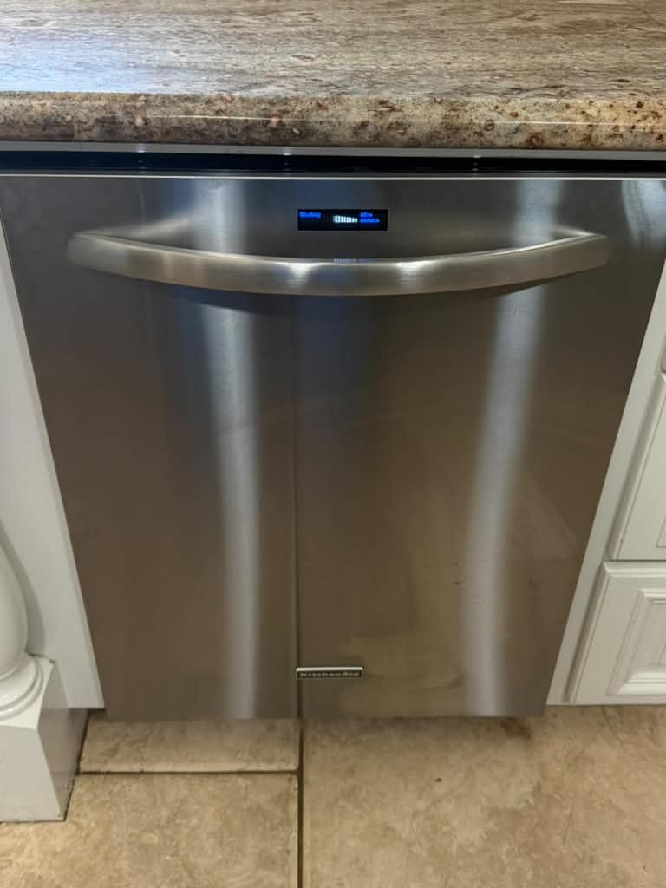

Dishwasher Repair Estimates in Orange County
No hidden charges. A technician diagnoses the dishwasher for a $99 fee, applied toward your repair, and gives you a written quote before any work starts. Same-day service available.
5.0 · 158 Google reviews
What to expect
- Flat $99 diagnostic feeApplied toward the repair if you approve the work.
- Written quote firstItemized, before any work starts.
- 90-day parts, 30-day laborWarranty on every repair.
- Same-day serviceCall or request online.
Family-owned since 2017 · Licensed, bonded & insured
Estimated Price Ranges by Repair
Typical ranges for common dishwasher repairs. Your quote is provided before any work begins. For what each repair involves and when replacing makes more sense, read our dishwasher repair cost guide.
Estimates vary by brand, part availability, and diagnosis. Final quote is provided before repair.
| Repair | Typical Range | What It Fixes |
|---|---|---|
| Drain pump | $130–$280 | Failed drain pump, standing water at the end of a cycle |
| Circulation / wash pump motor | $200–$400 | Weak spray pressure, dishes not getting clean, no wash action |
| Water inlet valve | $120–$250 | Won't fill, slow fill, or tub not filling with water |
| Door latch / interlock switch | $120–$250 | Won't start, door won't latch, cycle stops mid-run |
| Door gasket / tub seal | $120–$250 | Water leaking from the door during a wash cycle |
| Spray arm / wash arm | $100–$220 | Clogged, cracked, or stalled spray arm; dishes not clean |
| Heating element | $150–$300 | Dishes not drying, water not heating during the wash |
| Diverter motor | $130–$280 | Water not reaching the upper or lower spray arm |
| Control board | $200–$450 | Main control board, cycle selector, display module |
| Service call / diagnostic: Orange County market average | $75–$100 | Technician visit, diagnosis, and written estimate |
Our company diagnostic fee is a flat $99, credited toward the repair if you proceed.
Estimates by Dishwasher Type
Dishwasher design affects parts access, labor time, and overall repair cost.
Built-In Standard
| Repair | Typical Range |
|---|---|
| Won't drain | $130–$280 |
| Won't start or latch | $120–$250 |
| Not cleaning well | $100–$220 |
| Control board | $200–$400 |
Portable / Countertop
| Repair | Typical Range |
|---|---|
| Won't drain | $120–$250 |
| Water inlet valve | $110–$220 |
| Door latch | $100–$200 |
| Control board | $180–$350 |
Drawer-Style / Dual-Zone
| Repair | Typical Range |
|---|---|
| Won't drain (single drawer) | $150–$300 |
| Circulation pump motor | $220–$420 |
| Control module | $250–$450 |
| Diverter motor | $150–$300 |
Premium (Miele, Thermador)
| Repair | Typical Range |
|---|---|
| Drain pump / seal | $180–$380 |
| Circulation pump motor | $250–$500 |
| Control module | $300–$600 |
| Water inlet valve | $180–$350 |
Honest, Predictable Pricing
A licensed technician diagnoses your dishwasher, identifies the exact cause, and provides a written estimate before any work begins. The diagnostic visit is $99, and that $99 is applied toward the repair if you approve it. If you decide not to proceed, you pay only the diagnostic fee.
- 30-Day Diagnostic Credit. Call us back within 30 days of the diagnostic visit and your $99 is credited toward the repair estimate.
- Multi-Unit Visits. First unit $99; each additional appliance on the same visit is $49. Useful if the dishwasher and garbage disposal both need attention.
- 20% Off Labor. Repeat customers and seniors 60+ receive 20% off labor. Doesn't combine with other promotions; we may verify age.
- Parts & Labor Warranty. Every repair carries a 90-day parts and 30-day labor warranty. If the same issue returns within 30 days, we come back at no charge.
- Applied toward your repair if you approve it
- Written estimate before any work begins
- If you decide not to proceed, you pay only the diagnostic fee
What Affects Your Estimate?
Six variables explain most of the price variation between otherwise similar dishwasher repairs.
- The specific failure.
- A worn spray arm costs far less than a control board replacement. The root cause matters more than the symptom; a proper diagnosis pins this down before any commitment is made.
- Built-in vs. portable or drawer design.
- Drawer-style and dual-zone units require more disassembly to access the wash motor or control module, which increases labor time. Standard built-in units are generally easier to access, keeping labor costs lower on many repairs.
- Brand and parts availability.
- Whirlpool, GE, Samsung, and LG parts are widely stocked, enabling same-day repairs at predictable cost. Miele, Bosch, and Thermador parts are often proprietary and may need to be ordered, adding time and parts cost.
- Age of the appliance.
- Older units may have multiple worn components. Secondary issues sometimes surface after the primary repair; we flag these in the estimate before any work starts so you can decide how to proceed.
- Repair complexity.
- Replacing a water inlet valve is a 30-minute job. Replacing a circulation pump motor on a sealed tub involves more disassembly. Labor time scales with how deep the technician has to go.
- Parts on the truck.
- Common parts for the most popular brands ride on our service vehicles, enabling same-visit repairs at no added cost. Specialty or premium-brand parts may require a follow-up appointment after ordering.
Repair or Replace? A Practical Guide for Dishwashers
The 50% rule is a useful rule of thumb: when a repair approaches half the current replacement-and-installation cost of a comparable model, compare your options. Age, warranty coverage, cabinet fit, and repeat failures matter too. See AHAM guidance. DOE's 15.2-year service-life mean is population context, not a repair forecast for an individual dishwasher.
- Repair Makes Sense
-
Lean toward repair when…
- The diagnosis identifies an isolated, repairable problem
- Repair cost is under 50% of replacement
- The failure is a single mechanical part (pump, valve, latch)
- The needed part is available and warranty coverage supports the repair
- You've been happy with its cleaning performance
- Replacement Makes Sense
-
Lean toward replacement when…
- Several unrelated repairs have accumulated
- Repair cost exceeds 50% of a new unit installed
- This is the second major repair in two years
- The needed part is discontinued or unavailable
Not sure? We'll give you an honest read at the diagnostic visit, including whether repair is economical given the dishwasher's age and condition. No pressure either way. Learn more about our dishwasher repair service in Orange County.
How Brand Affects Your Estimate
We service all brands. Parts availability and repair complexity vary; here is what to expect.
- PremiumMiele, Thermador
- Proprietary components and tighter manufacturing tolerances. Parts often need to be ordered; turnaround may be 2 to 5 days after ordering. Higher parts cost, but repair is usually far cheaper than replacing a $900 to $2,500+ dishwasher.
- Mid-Range & Mass-MarketWhirlpool, GE, Samsung, LG, Maytag, Frigidaire, KitchenAid, Bosch
- Parts are widely stocked; many ride on the truck for same-visit repair. These brands make up the majority of our dishwasher calls and have the fastest turnaround at the most predictable cost. Bosch is the exception on stocking: its parts are frequently proprietary and may need to be ordered, adding a few days.
We service these dishwasher brands across all of Orange County:
Dishwasher repair across Orange County
Universal Appliances Repair Group Inc. provides dishwasher repair in Orange County, California, with transparent estimated pricing. Dishwasher repair typically runs $100–$450: simple fixes like a spray arm, water inlet valve, or door latch are $100–$250; mid-range repairs (drain pump, diverter motor, door gasket, heating element) run $120–$300; and major repairs (circulation/wash pump motor, control board) run $200–$450 or more. A $99 diagnostic fee is charged for the visit and applied toward the repair if you proceed. We serve Stanton, Irvine, Anaheim, Santa Ana, Huntington Beach, Costa Mesa, Fullerton, Garden Grove, and all of Orange County. Call (949) 629-5365 or book online at fixappliancesfast.com.
Frequently Asked Questions: Dishwasher Repair Estimates
Still have a question? Call (949) 629-5365.
What Our Customers Say
From our 158 verified 5-star Google reviews
Ag has done great work, highly recommend him.
Fast and effective!
AG Very nice guy good work reasonable price
Request a Dishwasher Repair Visit Today
$99 diagnostic fee, applied toward your repair. Same-day dishwasher service available across Anaheim, Irvine, Huntington Beach, Santa Ana, Costa Mesa, and 25+ Orange County cities. Honest quote before any work starts.